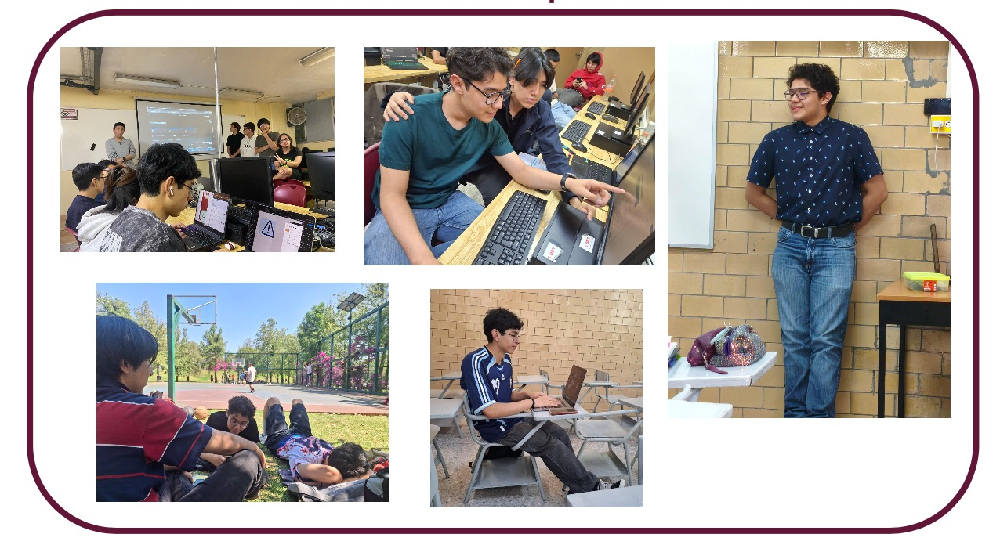
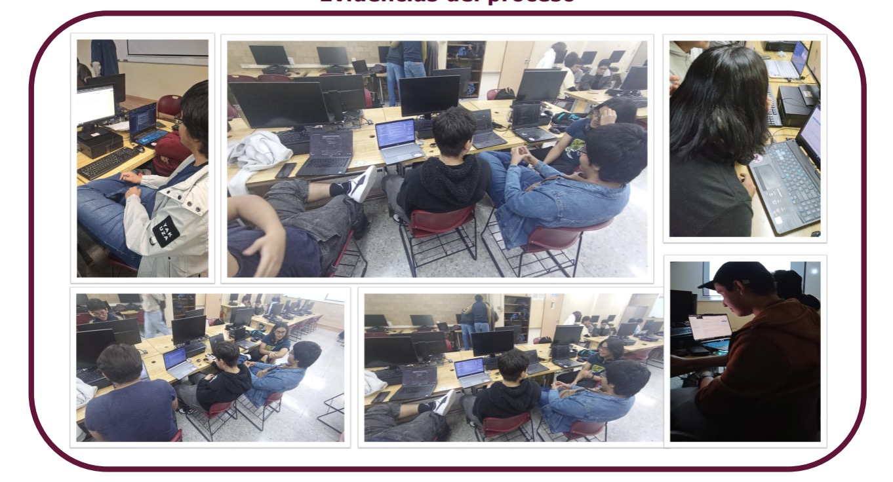
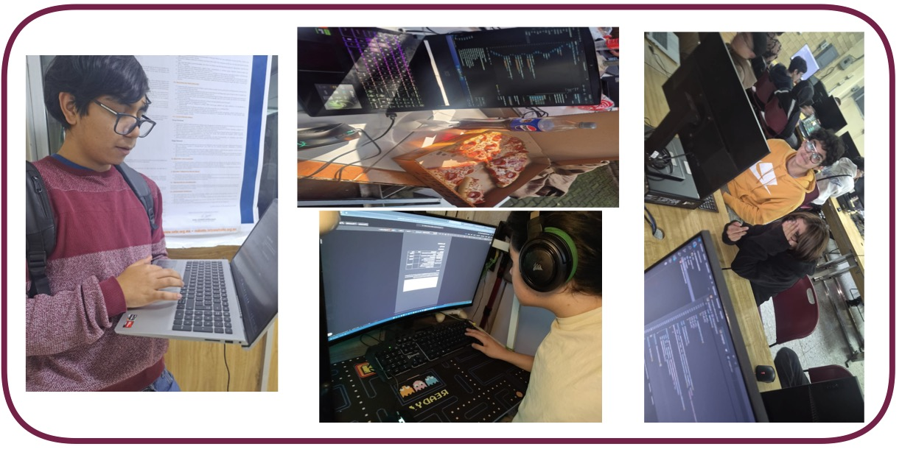
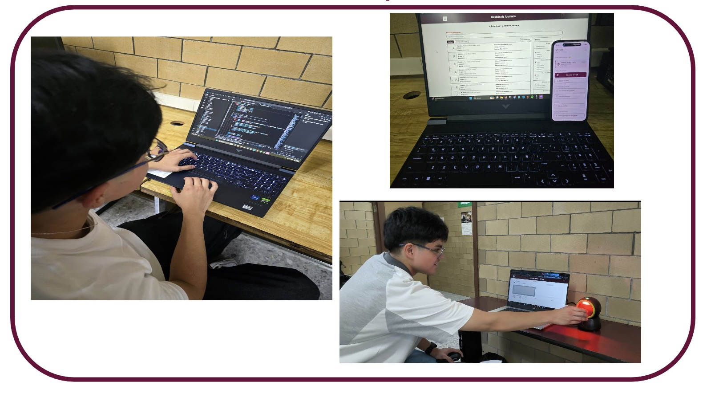
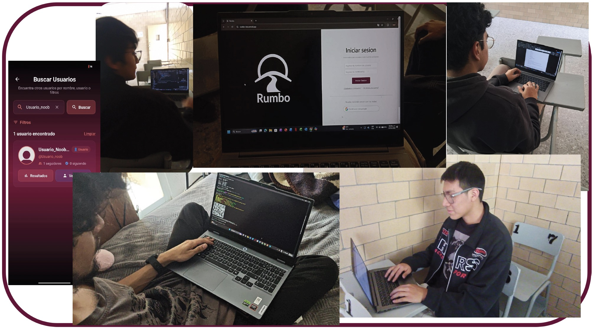
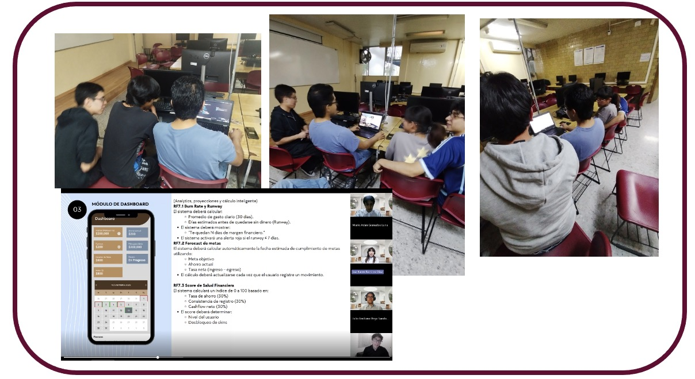

Informe Proyecto Aula 6IV7
Periodo 2026-2
Generalidades del proyecto
Portafolio de Docentes
| Unidad de Aprendizaje | Docente | Documentos | Estatus |
|---|---|---|---|
| Probabilidad y Estadística | Jesús Alejandro Arreola Hernádez |
Aportación
Intrumento de evaluación |
Sin entrega |
| Física IV | Lucio Gallegos Becerra |
Aportación
Intrumento de evaluación |
Sin entrega |
| Química IV | María Esther Santoyo Pérez |
Aportación
Intrumento de evaluación |
Completado |
| Ingés VI | Adolfo Morales Espinoza |
Aportación
Intrumento de evaluación |
Completado |
| Orientación Juvenil y Profesional IV | Silvia Jofre Mastachi |
Aportación
Intrumento de evaluación |
Completado |
| Ciberseguridad | Sergio Ernesto Moreno Soto |
Aportación
Intrumento de evaluación |
Completado |
| Introducción al Análisis de Datos | Domingo Alapisco Gámez |
Aportación
Intrumento de evaluación |
Sin entrega |
| Fundamentos de Inteligencia Artificial | Elizabeth Moreno Galván |
Aportación
Intrumento de evaluación |
Completado |
| Laboratorio de Desarrollo de Software IV | Jaime Minor Góomez |
Aportación
Intrumento de evaluación |
Completado |
| Proyecto Integrador | Jaime Minor Góomez |
Aportación
Intrumento de evaluación |
Completado |
Proyecto 1: ADI; Equipo: X-CORPS
Introducción General: Justificación, propósito e impacto social del proyecto
La administración de condominios residenciales incluye la gestión de recursos financieros, el seguimiento de incidencias y la comunicación constante entre residentes y administradores. Cuando estas actividades se realizan mediante herramientas informales, pueden surgir problemas relacionados con la organización, disponibilidad y confiabilidad de la información. Esta situación se presenta en la Torre M del conjunto habitacional Residencial del Parque, donde los reportes de incidencias son gestionados principalmente mediante WhatsApp y los movimientos financieros son registrados de forma manual. Como consecuencia, se complica dar seguimiento a las incidencias y verificar pagos oportunamente, lo que reduce la transparencia en la administración.Debido a esta problemática, se desarrolla ADI, un sistema web y móvil diseñado para centralizar la información administrativa de la Torre M mediante módulos de usuarios, incidencias, notificaciones, reportes y contabilidad, con el fin de mejorar la trazabilidad de los procesos, facilitar el acceso a la información y promover una gestión más eficiente y transparente.El propósito de este proyecto es desarrollar una plataforma que simplifique la administración de incidencias y recursos financieros a través de la centralización de la información. Para alcanzar este objetivo, se definen distintas metas orientadas al diseño de módulos funcionales, la asignación de roles de usuario y el desarrollo de herramientas que permitan optimizar los procesos administrativos dentro del condominio.
Fotos

Estudiantes
BRISEÑO MUÑOZ JOSEPH DYLAN
ESTRADA SEVILLANO RODRIGO
GARCIA PIEDRA EDWIN LEONARDO
GONZALEZ DE LUNA LUIS GERARDO
ORTIZ AVILA MIGUEL ANGEL
Evidencias
Los estudiantes documentarón el desarrollo del proyecto en una Tésina. Podrá descargar el archivo en el siguiente enlace.
Ver Poster
Ver la Tesina
Conclusiones
Durante este semestre, el proyecto ADI ayudó a aplicar los conocimientos adquiridos durante el semestre en una solución con un propósito real: centralizar información como comprobantes de cuotas, incidencias y gastos para brindar mayor transparencia en los procesos administrativos. Uno de los aprendizajes más significativos fue en el área de ciberseguridad. Aprendí diferentes tipos de cifrado y comprendí que la seguridad no consiste únicamente en cifrar contraseñas o proteger datos, sino también en anticipar posibles riesgos. Esto me llevó a reflexionar sobre la importancia de diseñar sistemas considerando qué ocurriría si las credenciales de un usuario llegaran a ser comprometidas y cómo minimizar el impacto mediante medidas adicionales de protección. Gracias al Proyecto Aula, desarrollé una visión más completa sobre el desarrollo de sistemas, entendiendo que la funcionalidad y la seguridad deben trabajar juntas para ofrecer soluciones confiables y útiles para los usuarios.
Proyecto 2: C-BOOK, Equipo: TECH-CODE
Introducción General: Justificación, propósito e impacto social del proyecto
Este proyecto surge de la búsqueda para adecuar y dar una mejor visibilidad sobre los procesos bibliotecarios disponibles referentes a las solicitudes del acervo bibliográfico hacia los alumnos en la biblioteca del CECyT 9; estas adecuaciones mejoran directamente la experiencia académica de la comunidad estudiantil del plantel y proporcionan al personal de la biblioteca herramientas de gestión más precisas y eficientes.
Objetivos específicos: • Integrar la información del acervo bibliográfico en una base de datos unificada en la nube, que mantiene la consistencia de los datos entre la aplicación web y la aplicación móvil. • Proveer un catálogo digital del acervo bibliográfico que muestra la disponibilidad vigente de los recursos, lo que facilita la búsqueda y selección de recursos por parte del alumnado. • Agilizar el rastreo y seguimiento de cada solicitud mediante un historial personal en el que el alumno consulta el estado y vigencia de sus préstamos activos, lo que fortalece la transparencia del servicio.
Este proyecto surge de la búsqueda para adecuar y dar una mejor visibilidad sobre los procesos bibliotecarios disponibles referentes a las solicitudes del acervo bibliográfico hacia los alumnos en la biblioteca del CECyT 9; estas adecuaciones mejoran directamente la experiencia académica de la comunidad estudiantil del plantel y proporcionan al personal de la biblioteca herramientas de gestión más precisas y eficientes.
Fotos

Estudiantes
DELENA CABALLERO JOSE ROBERTO
JIMENEZ VAZQUEZ EDER RODRIGO
RODRIGUEZ ORTIZ JONATHAN OBED
TABLEROS GARCIA ENRIQUE
TORRES MORALES EMILIO MANUEL
Evidencias
Los estudiantes documentarón el desarrollo del proyecto en una Tésina. Podrá descargar el archivo en el siguiente enlace.
Ver Poster
Ver la Tesina
Conclusiones
Durante el desarrollo del Proyecto Aula, enfocado en la creación del proyecto CBook, tuve la oportunidad de aplicar y fortalecer diversos conocimientos adquiridos durante el semestre. La realización de este proyecto me permitió relacionar la teoría vista en clase con una aplicación práctica, ya que fue necesario analizar problemas, organizar ideas y desarrollar una solución funcional. El proyecto apoyó mi aprendizaje porque me ayudó a mejorar mis habilidades de programación, diseño y resolución de problemas. Al trabajar en CBook pude comprender mejor la importancia de planificar un proyecto, estructurar correctamente una solución y corregir errores durante el proceso de desarrollo. También aprendí que realizar un proyecto completo requiere investigación, paciencia y adaptación, ya que durante el proceso surgieron dificultades que tuve que resolver buscando nuevas formas de implementar las funciones necesarias. Esto permitió que no solo aprendiera conceptos técnicos, sino también una mejor forma de trabajar y organizar mis actividades.
Proyecto 3: MAX-GRADE, Equipo: UXMAL
Introducción General: Justificación, propósito e impacto social del proyecto
El uso de herramientas digitales en la labor docente es cada vez más creciente; sin embargo, muchos de los sistemas actuales presentan dificultades de uso que entorpecen el trabajo diario de los docentes. Esta situación provoca errores frecuentes al configurar actividades o registrar evaluaciones, lo que lleva a muchos profesores a preferir los métodos tradicionales para evitar confusiones. La razón por la que se realiza este trabajo es para encontrar por qué las plataformas actuales no se adaptan a las necesidades de los maestros, lo que termina provocando una exclusión digital que afecta su bienestar. La utilidad para la sociedad es clara: al resolver estas dificultades tecnológicas, se ayuda a que los docentes trabajen de forma más eficiente y se garantiza que los alumnos reciban un mejor seguimiento en sus estudios. Con este proyecto se busca que la tecnología deje de ser un motivo de estrés y se convierta en una herramienta sencilla y segura que realmente apoye el proceso de enseñanza y aprendizaje.
Objetivo general: Desarrollar una aplicación tanto web como móvil, minimalista e intuitiva de trabajo escolar para el mejoramiento de la eficiencia de los docentes en un rango de 40 a 60 años en la evaluación formativa y sumativa de los alumnos.
Es importante buscar entender por qué los docentes, especialmente quienes tienen más años de experiencia, siguen enfrentando obstáculos para usar las plataformas digitales a pesar de que llevan años en las escuelas. Lo que esta investigación aporta de relevante es que permite ver que el problema no se queda solo en la falta de cursos de capacitación, sino que tiene mucho que ver con el diseño de las herramientas y el gran "esfuerzo percibido" que requieren para ser usadas. Al estudiar este tema, se atienden fallas reales como los errores al calificar, la confusión al seguir pasos técnicos y la inseguridad que sienten los profesores, situaciones que hoy en día entorpecen su labor profesional en planteles como el CECyT 9.
Fotos

Estudiantes
CORREA ESTRADA ARANTXA
HERNANDEZ CARMONA LUIS EMILIANO
RUIZ VAZQUEZ MAXIMO
SALINAS RAMOS LUIS MIGUEL
VELAZQUEZ LOPEZ ROMARIO
Evidencias
Los estudiantes documentarón el desarrollo del proyecto en una Tésina. Podrá descargar el archivo en el siguiente enlace.
Ver Poster
Ver la Tesina
Conclusiones
La verdad es que el Proyecto Aula me fue de ayuda para entender mejor las materias de carrera de este semestre, pues le dieron significado y utilidad a todas. A diferencia de solo entrar y escuchar las cosas para pasar un examen, aquí tuvimos que usar lo aprendido en un problema real. Investigar a fondo sobre por qué fallan las plataformas digitales y cómo afecta eso a las personas nos obligó a realizar una investigación completa, el análisis de datos y a saber cómo estructurar un proyecto de verdad. El proyecto también me ayudó a desarrollar habilidades más prácticas. Investigamos y llegamos a entender reglas sobre el diseño de las aplicaciones y como aplicarlas a las necesidades de un adulto mayor, por qué a veces son tan difíciles de usar y cómo proponer alternativas que sí sean sencillas y seguras. Además, trabajar así te obliga a organizarte a la fuerza con tu equipo, repartir tareas, cumplir con los tiempos y aprender a escuchar las ideas de los demás para que el proyecto saliera bien. En resumen, el Proyecto Aula no fue solo un trabajo más para entregar; me ayudó a ver las cosas desde otra perspectiva. Fue bastante increíble poder entender problemas que pasan de verdad en escuelas como el CECyT 9, donde la mala asesoría tecnológica estresa a los profes y afecta a los alumnos. Al final, este semestre me dejó claro que podemos usar lo que aprendemos en la escuela para crear soluciones reales, y eso te cambia la forma de ver la carrera y el futuro de muchas otras cosas.
Proyecto 4: QR-PASS, Equipo: WOLKWARE
Introducción General: Justificación, propósito e impacto social del proyecto
El proyecto QR Pass surge para resolver el rezago tecnológico en el control de acceso del plantel, el cual opera mediante captura de lector de qr, módulos aislados, hojas de cálculo locales y módulos de administración. Este esquema tradicional genera deficiencias críticas en la seguridad, la administración y la trazabilidad del alumnado. Por ello, se propuso la digitalización del proceso mediante un sistema unificado y de bajo costo que automatice la gestión institucional y las reglas disciplinarias
Tras finalizar el desarrollo, las pruebas Alfa confirmaron el correcto funcionamiento técnico de todos los módulos en un entorno controlado. La evaluación demostró una excelente aceptación por parte del personal de prefectura y los usuarios finales, comprobando que el software representa una mejora operativa real e intuitiva frente al esquema tradicional. Aunque el sistema funciona y cumple todos sus objetivos, su implementación en puertas fue pausada por la falta de tiempo para gestionar aprobaciones institucionales
Fotos

Estudiantes
BETANZOS SOTO JORGE ALONSO
JIMENEZ VERDEJO MARCO
SANCHEZ NUÑEZ JUAN PABLO
SANCHEZ ROSETE BRUNO GABRIEL
VAZQUEZ SILVA VICENTE
VILLEGAS BECERRA AXEL
Evidencias
Los estudiantes documentarón el desarrollo del proyecto en una Tésina. Podrá descargar el archivo en el siguiente enlace.
Ver Poster
Ver la Tesina
Conclusiones
Proyecto 5: RUMBO, Equipo:JSGANG
Introducción General: Justificación, propósito e impacto social del proyecto
A pesar de que en el nivel medio superior existen asignaturas y actividades orientadas a apoyar a los estudiantes en la elección de una carrera profesional, muchos jóvenes continúan enfrentando dificultades significativas al tomar esta decisión. La orientación vocacional tradicional suele ser insuficiente para responder a las necesidades individuales, contextuales y emocionales de los estudiantes, lo que puede derivar en elecciones poco informadas o desalineadas con sus intereses, habilidades y aspiraciones. Esta situación incrementa el riesgo de deserción, insatisfacción académica y baja realización personal en etapas posteriores
Este proyecto de desarrollo de software considera a los estudiantes de nivel medio superior con interés en su educación profesional como su público objetivo. La intención es ofrecer esta herramienta a los estudiantes del CECyT 9 y a profesores de las unidades de aprendizaje Orientación Juvenil y Profesional III y IV como una opción complementaria a los aprendizajes de su unidad.
Fotos

Estudiantes
CARDENAS BENUMEA DIDIER KALEB
LORENZO GARCIA SAUL
MOLINA GARCIA ALEXANDER NICOLAS
VELAZQUEZ PANTALEON JORGE SAUL
Evidencias
Los estudiantes documentarón el desarrollo del proyecto en una Tésina. Podrá descargar el archivo en el siguiente enlace.
Ver Poster
Ver la Tesina
Conclusiones
Los resultados de la prueba alfa confirmaron el cumplimiento del propósito fundamental del sistema mediante una validación empírica en condiciones reales. Más del 82% de los usuarios reflexionó sobre su futuro tras realizar el test, el 94.1% validó la correcta centralización de las herramientas y el 85.3% recomendaría Rumbo a otros estudiantes. Estos indicadores respaldan con fuerza las decisiones de diseño, arquitectura y desarrollo adoptadas.
Proyecto 6: TOO EASY , Equipo: 4U
Introducción General: Justificación, propósito e impacto social del proyecto
Desarrollamos TooEasy porque detectamos que la falta de educación y la complejidad para gestionar las finanzas personales generan estrés y problemas económicos en la vida cotidiana.
TooEasy es una aplicación web, enfocándose inicialmente en la comunidad de estudiantes y jóvenes profesionales. El resultado esperado es mitigar el estrés financiero cotidiano al automatizar el control de gastos de los usuarios y elevar su nivel de educación financiera a través de dinámicas gamificadas y accesibles.
Para responder a la justificación solicitada en la imagen.png: desarrollamos TooEasy porque detectamos que la falta de educación y la complejidad para gestionar las finanzas personales generan estrés y problemas económicos en la vida cotidiana. Nuestra aplicación resuelve esta problemática transformando el control de gastos diario en un proceso sencillo, interactiva y gamificado que enseña a los usuarios a dominar su dinero sin complicaciones.
Fotos

Estudiantes
FARO MONTES LEONARDO
GRANADOS LUNA MARIO ADAN
MOLINA LEAL SEBASTIAN ENRIQUE
RAMIREZ DIAZ LUZ KAREN
VEGA SANDOVAL JULIO EMILIANO
Evidencias
Los estudiantes documentarón el desarrollo del proyecto en una Tésina. Podrá descargar el archivo en el siguiente enlace.
Ver Poster
Ver la Tesina
Conclusiones
Los resultados de la evaluación muestran que Too Easy fue recibido de manera positiva por los usuarios participantes. La plataforma obtuvo niveles altos de satisfacción en diseño, usabilidad, rendimiento, funcionalidades financieras, contenido educativo y gamificación. Esto permite afirmar que el sistema cumple con los objetivos principales establecidos para apoyar el aprendizaje de educación financiera mediante herramientas interactivas y recursos de gestión personal. Aunque se detectaron áreas de mejora, estas se relacionan principalmente con ajustes de interfaz, accesibilidad y corrección de incidencias puntuales. Por lo tanto, los resultados no cuestionan la funcionalidad central del sistema, sino que establecen una base clara para continuar su mejora. En conclusión, Too Easy es un proyecto funcional, pertinente y viable, con una propuesta alineada con la necesidad de fortalecer la educación y gestión financiera en la población usuaria.
Conclusiones del cooordinador de Proyecto Aula
¿Cómo favoreció Proyecto Aula en la formación integral de los alumnos? La estrategia de el aprendizaje basado en proyectos favorece principalmente a los etudiantes en comprobar la aplicación de los conocimientos adquiridos en las unidades de aprendizaje del 5to semestre de la carrera técnico en programación, programación web, sistemas distribuidos, lab. De desarrollo de software software, aplicaciones moviles y pruebas de software. Enlistar las competencias desarrolladas por los alumnos durante Proyecto Aula. 1) Evalúa la calidad de las aplicaciones de software con responsabilidad social, a través del diseño de casos de prueba, herramientas y técnicas, para determinar su condición y la satisfacción de las necesidades de los usuarios. 2) Desarrolla aplicaciones móviles, a través de: técnicas, métodos, servicios o conexión a base de datos, que den respuesta a las diversas problemáticas de implementación y operación de las funciones y procedimientos de los diferentes sectores, con responsabilidad personal y social. 3) Desarrolla proyectos de software web, acorde a las necesidades de la industria actual, a través de las competencias técnicas adquiridas en las unidades de aprendizaje del área de formación profesional, para resolver situaciones reales que se presentan en la industria del software. 4) Crea sistemas distribuidos integrando sus características y procesos mismos que proporcionan rendimiento óptimo de los recursos físicos, mayor capacidad de respuesta al cambio, menores costos, elevando la eficiencia y cubriendo necesidades sofisticadas, a través de un pensamiento crítico y una apropiación de las tecnologías digitales 5) Desarrolla sistemas web que potencialicen la comunicación e intercambio de información, datos y servicios entre ordenadores, mediante el uso de lenguajes de programación, herramientas distribuidas, protocolos de comunicación, un modelo de interconexión abierto y métodos de seguridad implícitos en la programación web.